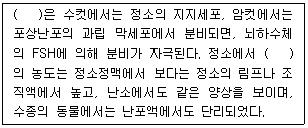
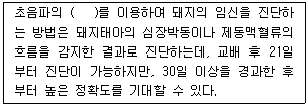
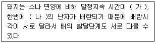
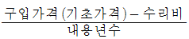
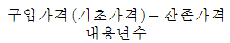
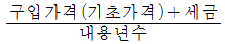
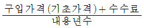

축산산업기사 (2017-03-05 기출문제)
1과목: 가축번식 육종학
1. 소의 조기 임신진단법으로 우유 또는 혈액 중 호르몬 분석 시기는?
- 수정 후 19~23일인 때
- 수정 후 46~50일인 때
- 수정 후 56~60일인 때
- 수정 후 76~80일인 때
(정답률: 69%)

2. 다음 중 인공수정의 장점이 아닌 것은?
- 종모축의 사육두수를 줄일 수 있어 사료 및 관리비를 절감할 수 있다.
- 숙련된 기술자와 특별한 기구 및 시설이 필요하지 않다.
- 정액의 원거리수송이 유용하다..
- 한 발정기에 2~3회 수정을 할 수 있으므로 수태율을 높인다.
(정답률: 90%)
3. 임신 중에 일어나는 자궁증대, 태아 혹은 태막을 시술자가 촉진하여 임신을 진단하는 방법은?
- 직장검사법
- 프로게스테론 분석법
- eCG 분석법
- 임신-특수단백질 B(PSPB) 검출법
(정답률: 83%)
4. 난소기능의 이상에 대한 설명으로 틀린 것은?
- 이상발정은 FSH나 LH의 불균형으로 나타난다.
- 난소기능의 이상은 호르몬제로 치료가 가능하다.
- 난포낭종은 FSH의 부족과 LH의 과잉으로 나타난다.
- 무발정은 영양실조, 노화 등에서 나타날 수 있다.
(정답률: 71%)
5. 포유동물에서 GTH(FSH나 LH)의 방출을 조절하는 GnRH는 어디에서 분비되는가?
- 뇌하수체 전엽
- 뇌하수체 후엽
- 부신피질
- 시상하부
(정답률: 65%)
6. 다음 중 뇌하수체 후엽에 해당하는 것은?
- 신경엽
- 원위부
- 융기부
- 중간부
(정답률: 67%)
7. 다음 중 ( )에 알맞은 내용은?

- 에스트로겐
- 릴랙신
- 프로게스테론
- 인히빈
(정답률: 54%)
8. 선발에 의해 나타나는 유전적 개량량의 크기를 크게 하는 것이 아닌 것은?
- 동일한 사양 관리 조건하에서 사육하여 환경변이를 줄인다.
- 어린 가축을 번식에 이용하여 세대간격을 줄인다.
- 가축의 폐사를 줄여 많은 수의 후보축을 확보한다.
- 선발 대상 형질을 많이 하여 선발차를 크게 한다.
(정답률: 46%)
9. 교미 자극에 의해 배란하는 가축은?
- 닭
- 토끼
- 염소
- 돼지
(정답률: 78%)
10. 젖소의 바람직한 체형은?
- 장방형
- 쐐기형
- 원형
- 사방형
(정답률: 82%)
11. 다음 중 계절번식을 하지 않는 것은?
- 말
- 면양
- 산양
- 돼지
(정답률: 86%)
12. 다음 중 단태동물에 해당하는 것은?
- 돼지
- 개
- 토끼
- 소
(정답률: 72%)
13. 육우의 교잡목적으로 틀린 것은?
- 번식력, 생존율 등 잡종강세를 이용하기 위해
- 품종간 상보효과를 이용하기 위해
- 강력유전현상을 이용하기 위해
- 새로운 유전인자를 도입하여 유전적 변이를 크게 하기 위해
(정답률: 63%)
14. 육우와 젖소의 경제형질이 틀린 것은?
- 육우 : 번식능률
- 젖소 : 번식능률
- 육우 : 이유시 체중
- 젖소 : 이유시 체중
(정답률: 80%)
15. 다음 중 발정의 징후로 틀린 것은?
- 보행수가 증가하거나 신경이 예민해지기도 한다.
- 다른 가축에 승가 행동을 하거나 승가를 허용한다.
- 식욕이 증가하고 젖 생산량이 증가하기 시작한다.
- 외음부가 붉게 부풀어 오르고 점액을 분비하기도 한다.
(정답률: 89%)
16. 돼지의 임신 설명 중 ( )에 알맞은 것은?

- 링겔만 효과
- 노시보 효과
- 플라시보 효과
- 도플러 효과
(정답률: 79%)
17. 다음 중 호르몬의 특징으로 틀린 것은?
- 호르몬은 표적세포에게만 특이성과 선택성을 가지고 작용을 한다.
- 호르몬은 유기물이기 때문에 에너지를 공급한다.
- 호르몬은 그 효과가 빠르면 수시간, 늦으면 수일 후에 서서히 나타난다.
- 호르몬의 분비율은 일정하지 않다.
(정답률: 79%)
18. 소를 비롯한 모든 축종에서 임신이 된 암컷은 다음 주기의 발정발현이 중지되는데, 이것을 근거로 임신을 추정하는 방법은?
- estrogen 분석법
- ultrasound법
- rectal palpation 법
- non return 법
(정답률: 77%)
19. 돼지의 주요자궁의 형태와 축종이 옳지 않은 것은?
- 중복자궁 - 돼지
- 분열자궁 - 소
- 쌍각자궁 - 말
- 단자궁 - 영장류
(정답률: 67%)
20. 다음 중 (가), (나)에 알맞은 내용은?

- (가) : 짧고, (나) : 다수
- (가) : 짧고, (나) : 소수
- (가) : 길고, (나) : 소수
- (가) : 길고, (나) : 다수
(정답률: 73%)
2과목: 가축사양학
21. 가축의 소화기관에 대한 설명으로 옳은 것은?
- 돼지는 근위를 갖고 있으며 맹장이 발달되어 있다.
- 닭은 구강과 소낭을 이용하여 소화를 시킨다.
- 소의 위는 제 1위를 비롯하여 4개의 위로 이루어져 있다.
- 사슴은 위의 발달이 잘 된 잡식성 동물이다.
(정답률: 86%)
22. 옥수수 위주 급여 시 다가의 불포화 지방산 함량이 높고 필수 지방산이 많이 들어 있는 축산물은?
- 쇠고기
- 우유
- 양고기
- 돼지고기
(정답률: 68%)
23. 젖소의 반추위내에서 생성되는 휘발성 지방산 중 어느 지방산의 생성이 증가될 때 우유 중의 지방함량이 증가 되는가?
- 초산
- 낙산
- 프로피온산
- 젖산
(정답률: 56%)
24. 다음 중 곡류사료에 속하지 않는 것은?
- 수수
- 대두
- 귀리
- 조
(정답률: 66%)
25. 다음 중 단백질의 소화효소가 아닌 것은?
- 리파아제
- 펩신
- 트립신
- 키모트립신
(정답률: 62%)
26. 젖소에 있어서 가소화단백질이 우유 단백질로 전환되는 효율은 일반적으로 어느 정도인가?
- 약 10~20%
- 약 30~40%
- 약 60~70%
- 약 90~100%
(정답률: 46%)
27. 곡류의 이용성을 높이기 위해 전분을 젤라틴화 할 목적으로 각종 가공처리가 실용화되었다. 이와 관계없는 것은?
- 증기압편(flake)
- 수침
- 가압압편(flake)
- 건열처리가공
(정답률: 75%)
28. 비육돈에서 에너지에 관한 설명으로 틀린 것은?
- 사료내 에너지 함량이 높으면 성장속도가 빨라지고 사료 효율이 개선된다.
- 일반적으로 에너지 수준이 증가할수록 등지방 두께가 얇아진다.
- 에너지 수준이 증가할수록 살코기 비율이 감소된다.
- 에너지 수준이 증가할수록 배장근 단면적이 감소된다.
(정답률: 71%)
29. 비단백태질소화합물(non-protein nitrogen compound, NPN)에 해당하지 않는 것은?
- 요소
- 암모니아
- 알부민
- 나이트레이트
(정답률: 55%)
30. 육계 사료를 고에너지화하기 위해 첨가하는 사료는?
- 탄수화물 사료
- 지방질 사료
- 단백질 사료
- 비타민 사료
(정답률: 67%)
31. 산란계의 사료급여 방법에 대한 설명으로 틀린 것은?
- 자유급여 방법은 사료섭취능력을 기초로 균형된 사료를 급여하는 방법이다.
- 자유급여 방법은 제한급여보다 시간과 노력이 많이 소요 된다.
- 제한급여는 사료의 양과 질 및 급여횟수를 제한하는 방법이다.
- 사료를 제한하는 방법 중의 하나는 사료의 질을 낮추어 자유급여 하는 방법도 해당된다.
(정답률: 78%)
32. 당밀에 함유되어 있는 평균 당붑 함량은?
- 10~20%
- 30~40%
- 60~70%
- 90~100%
(정답률: 61%)
33. 육계의 에너지 요구량은 일반적으로 대사에너지를 사용 하는데, 그 이유가 아닌 것은?
- 사료 중 영양균형에 의한 영향이 많다.
- 측정방법이 비교적 쉽고 오차가 적다.
- 닭의 품종 등 유전적 요인에 따라 크게 달라지지 않는다.
- ME 값은 성장, 산란 등 닭의 능력과 상관관계가 높다.
(정답률: 40%)
34. 난중 또는 난각질과 비교적 관계가 적은 영양소는?
- 사료 중 단백질 함량
- 인 함량
- 칼슘 함량
- 탄수화물 함량
(정답률: 76%)
35. 우유 성분에 대한 설명으로 틀린 것은?
- 유지방은 주로 acetate와 혈액 중의 혈장 중성지방으로 부터 합성된다.
- 유단백은 아미노산을 이용하여 유방에서 합성하고 유청 알부민은 혈액에서 직접 우유로 전이된다.
- 유당은 유방에서 합성되지 않고 소장에서 흡수된 것이 그래도 전이된다.
- 무기물과 비타민은 유방에서 합성되지 않고 혈액에서 직접 공급을 받는다.
(정답률: 56%)
36. 곡류사료의 일반적 특징이 아닌 것은?
- 가축의 기호성이 높다.
- 일반적으로 소화율이 높다.
- 전분의 함량이 높다.
- 인(P)보다 칼슘(Ca)함량이 높다.
(정답률: 72%)
37. 다음 광물질 중 부족하면 산유 초기 젖생산에 필요한 체지방 분해를 감소시키는 광물질은?
- Mn
- Fe
- S
- I
(정답률: 59%)
38. 산란계의 체내에서 합성되지만 실용 산란계 사료 내 추가 공급되어질 수 있는 비타민은?
- 비타민 A
- 비타민 B
- 비타민 C
- 비타민 E
(정답률: 43%)
39. 어느 농장의 젖소 한 마리가 FCM기준으로 37KG의 우유를 생산했다. 생산 당시 유지율이 3.5%라면, 3.5% 기준으로 몇 kg을 생산한 것인가?
- 16.5
- 40
- 20
- 33
(정답률: 51%)
40. 폐분(조개껍질 가루)의 주성분은?
- MaCO3
- CaCO3
- CaHPO4
- MaHPO3
(정답률: 78%)
3과목: 축산경영학
41. 손익분기점 계산에 대한 설명으로 옳은 것은?
- 비용으로는 경영비만을 사용한다.
- 비용으로는 생산비만을 사용한다.
- 비용은 반드시 고정비와 변동비로 분해할 수 있어야 한다.
- 비용을 고정비와 변동비로 분해할 필요가 없다.
(정답률: 80%)
42. 다음의 고정자본재 중 감가상각비를 계산하지 않는 항목은?
- 축사
- 착유기
- 경운기
- 토지
(정답률: 79%)
43. 축산농가의 경제 구조식을 잘못 표기한 것은?(오류 신고가 접수된 문제입니다. 반드시 정답과 해설을 확인하시기 바랍니다.)
- 농가소득 = 농업소득 + 농외소득
- 농외소득 = 농외수입 - 농외지출
- 농업소득 = 농업조수입 + 농업경영비
- 농가경제잉여 = 농가소득 + 가계비 - 조세공과
(정답률: 47%)
44. 낙농경영의 기술 진단지표에 해당되지 않는 것은?
- 두당 연간 산유랑
- 유지율
- 관리원인
- 유사비
(정답률: 70%)
45. 정액법으로 감가상각비를 계산하는 공식은?




(정답률: 86%)
46. 비육우경영에서 기술지표가 아닌 것은?
- 비육우 번식회수
- 사료요구율
- 1인당 비육우 관리두수
- 비육우 1두당 일당 증체량
(정답률: 48%)
47. 축산물 생산함수가 나타내는 관계를 설명한 것으로 옳은 것은?
- 가격과 비용
- 사육마리수와 노동량
- 투입과 산출
- 총비용과 총한계비용
(정답률: 61%)
48. 가족 노동력의 설명으로 옳지 않은 것은?(오류 신고가 접수된 문제입니다. 반드시 정답과 해설을 확인하시기 바랍니다.)
- 경영의 노동수요와 정확하게 일치 함
- 노동에 대한 보수는 경영성과로 수취 됨
- 자가노동의 이용은 비용이 아니라 소득의 원천이 됨
- 고용노임이 상승하면 가족노동에 대한 의존도가 높아짐
(정답률: 50%)
49. 노동 생산성을 옳게 표현 한 것은?
- 생산량의 변화비율 ÷ 투입량의 변화비율
- 노동투입량 ÷ 총생산량
- 총생산량 ÷ 노동투입량
- 노동투입량 ÷ 자본투입량
(정답률: 70%)
50. 평균비용과 관련된 설명으로 옳지 않은 것은?
- 평균고정비용 = 총고정비용 ÷ 산출량
- 평균가변비용 = 총가변비용 ÷ 산출량
- 평균총비용 = 평균고정비용 ÷ 평균가변비용
- 평균총비용 = 고정비용 ÷ 유동비용
(정답률: 57%)
51. 완전경쟁시장에서 이윤 극대화의 조건에 해당되지 않는 것은?
- 한계비용 = 한계수입
- 이윤극대화 지점에서 가격이 평균비용보다 낮을 것
- 이윤극대화 지점에서 한계비용이 상승적일 것
- 한계비용 = 가격
(정답률: 60%)
52. 축산경영의 입지조건에 해당되지 않는 것은?
- 시장적 환경조건
- 사회적 환경조건
- 표토적 환경조건
- 법률적 환경조건
(정답률: 67%)
53. 축산물 유통마진으로 옳지 않은 것은?
- 이윤
- 저장비
- 사료비
- 보험료
(정답률: 57%)
54. 사료효율을 구하는 방법으로 옳은 것은?
- 사료 급여량 / 축산물 생산량
- 축산물 생산량 / 사료 급여량
- 구입 사료대 / 유대
- 사료 급여량 / 사료 구입량
(정답률: 64%)
55. 다음 중 고정자본재에 해당하는 것은?
- 동물약품
- 번식우
- 배합사료
- 현금
(정답률: 82%)
56. 1일 우유 판매액이 15000원이고, 1일 농후사료 급여비가 9000원이라 할 때, 유사비는 몇 %인가?
- 50%
- 60%
- 70%
- 80%
(정답률: 71%)
57. 가축 종류에 의한 축산경영의 분류방법에 해당되지 않는 것은?
- 전업경영
- 낙농경영
- 양돈경영
- 육우경영
(정답률: 82%)
58. 축산물 경영비 비목에 해당되지 않는 것은?
- 사료비
- 수도광열비
- 자가 노력비
- 수선비
(정답률: 73%)
59. 토지 자본에 대한 감가상각비를 계산하지 않는 이유는 토지의 어떤 성질 때문인가?
- 불가동성
- 불소모성
- 적재력
- 배양력
(정답률: 78%)
60. 결합생산물이 아닌 것은?(오류 신고가 접수된 문제입니다. 반드시 정답과 해설을 확인하시기 바랍니다.)
- 비육우와 퇴비
- 우유와 송아지
- 육계와 계란
- 양털과 양고기
(정답률: 38%)
4과목: 사료작물학
61. 임간초지의 개량적지에 대한 설명으로 틀린 것은?
- 광선이 어느정도 들어오는 곳
- 토양수분이 풍부한 곳
- 북향의 경사도가 10도 미만으로 기계작업이 가능한 것
- 큰나무와 침엽수가 있는 곳
(정답률: 57%)
62. 초지를 이용할 때 채초이용에 비해 방목의 유리한 점이 아닌 것은?
- 가축이 운동과 일광욕을 충분히 할 수 있다.
- 채초 및 운반에 드는 시간과 노력이 절감된다.
- 단위면적 당 건물수량은 채초이용보다 많다.
- 기호하는 목초를 마음껏 채식 할 수 있다.
(정답률: 71%)
63. 다음 중 옥수수 사일리지의 수확적기에 대한 설명으로 틀린 것은?
- 황숙기
- 흑색층 형성기
- 수분함량 68~72% 도달기
- 출사기로부터 60일 전후
(정답률: 58%)
64. 건초 제조 시 장시간 일광에 조사되거나 대기 중 방치되면 약 90% 이상 파괴되는 성분은?
- 카로틴
- 탄수화물
- 단백질
- 지방
(정답률: 80%)
65. 다음 사료작물 중 개화 후 목질화가 가장 빠른 것은?
- 귀리
- 호밀
- 티머시
- 오차드그라스
(정답률: 57%)
66. 사료작물의 작부체계 운영에 있어서 농업경영상 지켜야 할 조건으로 거리가 먼 것은?
- 농가 노동 분배의 합리화
- 토양 비옥도의 지속적 유지
- 최고수량만을 위한 혼작 유지
- 위험분산과 조사료의 자급률 제고
(정답률: 78%)
67. 다음 중 사일리지 장점이 아닌 것은?
- 건초에 비하여 날씨의 지백를 적게 받는다.
- 건초에 비하여 비타민 D의 함량이 높다.
- 생초를 다즙질의 상태로 연중 저장이 가능하다.
- 토지의 이용성을 높여 단위면적당 많은 가축사육이 가능하다.
(정답률: 70%)
68. 알팔파로 사일리지를 만들 때 재료로서의 특성과 제조방법에 대한 설명으로 옳은 것은?
- 옥수수에 비해 양질 사일리지 조제에 유리한 완충력이 높다.
- 가용성탄수화물 함량이 높아 사일리지 발효가 잘 된다.
- 고수분 사일리지로 제조하는 경우 첨가제 없이도 양질의 사일리지 조제가 가능하다.
- 예건 또는 저수분 사일리지로 조제하는 것이 좋다.
(정답률: 70%)
69. 건초 제조 중 발생하는 양분 손실이 아닌 것은?
- 비타민 D에 의한 손실
- 잎의 탈락에 의한 손실
- 강우에 의한 손실
- 식물호흡에 의한 손실
(정답률: 64%)
70. 두과 목초의 형태적 특성에 대한 설명으로 틀린 것은?
- 뿌리는 하나이거나 또는 곧은 뿌리로 되어 있다.
- 접종된 목초의 뿌리에는 질소고정을 위한 근류균을 갖는다.
- 잎은 평행맥으로 되어 있으며 줄기 위에 어긋나게 2열로 각 마디에 하나씩 나 있다.
- 종자는 일반적으로 배젖이 없다.
(정답률: 67%)
71. 단위면적당 가소화영양소총량의 생산량이 가장 높은 사료작물은?
- 옥수수
- 수단그라스
- 귀리
- 호밀
(정답률: 76%)
72. 다음 목초 중 하고에 가장 강한 것은?
- 페레니얼 라이그라스
- 티머시
- 톨 페스큐
- 켄터키 블루그라스
(정답률: 50%)
73. 다음 중 수확손실이 가장 클 것으로 예상되는 사료작물 저장 방법은?
- 사일리지
- 예건 사일리지
- 헤일리지
- 자연건조 건초
(정답률: 77%)
74. 방목 시 초지식생 효과적으로 유지하여 가축의 섭취량을 높이는데 적당한 조건은?
- 초장이 낮고, 밀도가 낮은 초지
- 초장이 낮고, 밀도가 높은 초지
- 초장이 높고, 밀도가 낮은 초지
- 초장이 높고, 밀도가 높은 초지
(정답률: 68%)
75. 불경운 초지조성에 대한 설명으로 틀린 것은?
- 어린 목초의 정착이 빠르다.
- 시간과 비용의 투입에 비해 성과가 느릴 수 있다.
- 초지의 목양력 증가가 느리다.
- 채초이용보다는 방목이용이 적합하다.
(정답률: 74%)
76. 화본과 목초와 두과 목초에 있어서 1번초의 수확적기가 올바르게 나열된 것은?
- 화본과 목초 : 영양생장기, 두과 목초 : 개화말기
- 화본과 목초 : 영양생장기, 두과 목초 : 개화초기
- 화본과 목초 : 출수기, 두과 목초 : 개화말기
- 화본과 목초 : 출수기, 두과 목초 : 개화초기
(정답률: 81%)
77. 양질의 건초로 가장 적합한 것은?
- 녹색이 짙고 향기가 있으며 잎이 많고 기호성이 높은 것
- 녹색이 짙고 줄기가 많으며 기호성이 높은 것
- 녹색이 짙고 부피가 많으며 기호성이 보통인 것
- 녹색이 짙고 잎이 많으며, 수분이 20%이상으로 기호성이 있는 것
(정답률: 79%)
78. 사일리지의 품질을 평가하는 방법 중 화학적 방법이 아닌 것은?
- pH에 의한 평가
- 유기산 조성 비율에 의한 평가
- 질소화합물의 종류에 의한 평가
- 담황녹갈색(올리브색) 또는 담황갈색에 의한 평가
(정답률: 84%)
79. 다음 중 방목용 목초로 가장 적합하지 않은 것은?
- 화이트 클로버
- 페레니얼 라이그라스
- 톨 페스큐
- 레드 클로버
(정답률: 48%)
80. 옥수수 재배 시 피해규모가 크고, 벼멸구에 의해 전염되는 것으로 알려진 병충해는?
- 호마엽고병
- 그을음무늬병
- 흑조위축병
- 조명나방 유충
(정답률: 50%)